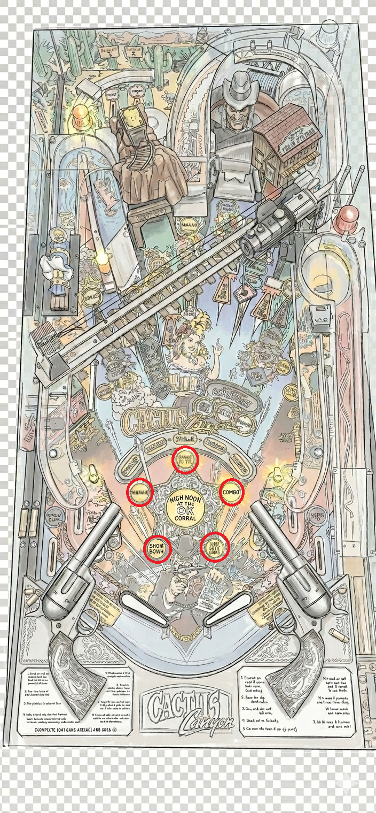
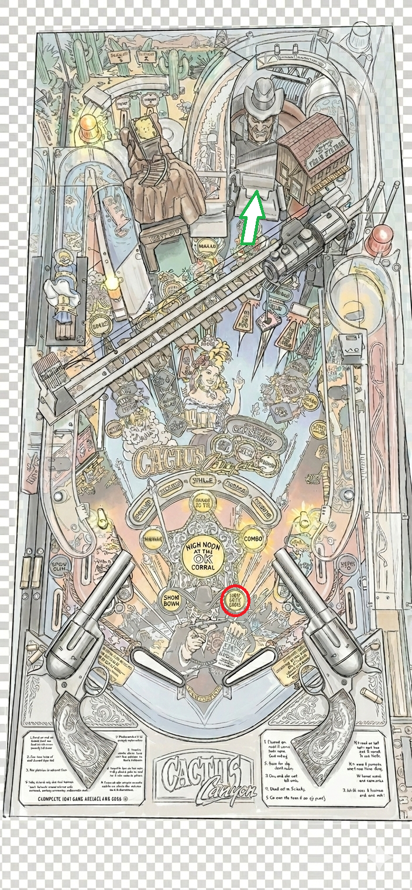
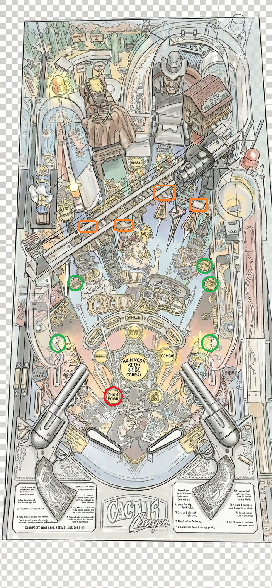
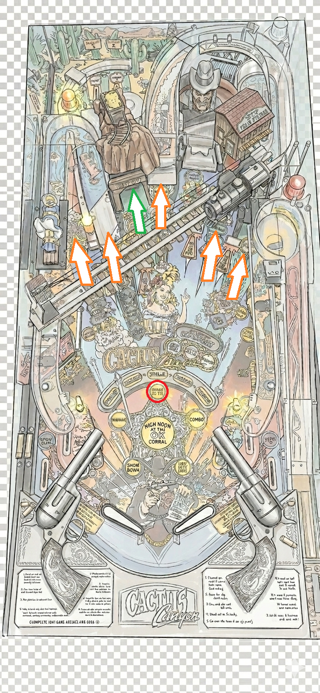
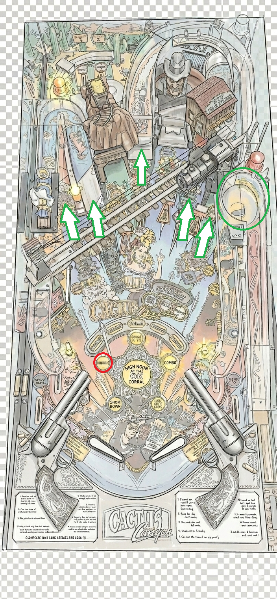
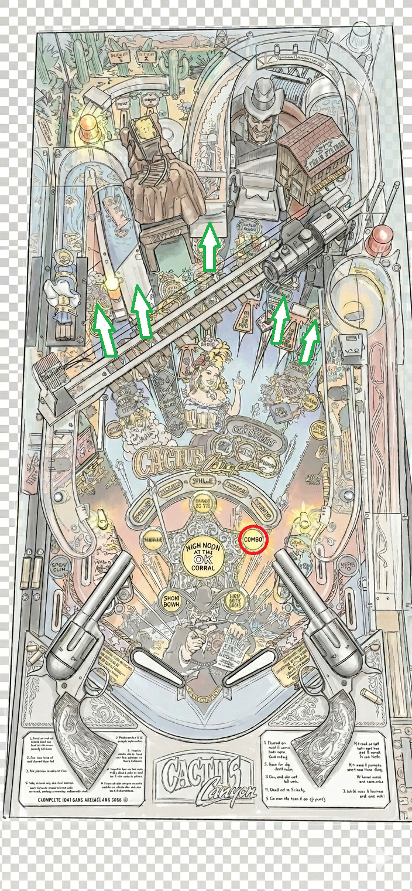

Start


Start
Spieler bewegt sich


Spieler bewegt sich
- Star 1: Defeat all 4 Bart brothers (leads to Bionic Bart)
- Star 2: Win all 4 Quick Draws (leads to Showdown)
- Star 3: Complete the Mine (Motherlode)
- Star 4: Complete the Stampede
- Star 5: Combos (10 required)


- XXX
- Star triggers Bart Brothers
- To reach Bionic Bart, focus only on point 2:
- Shoot the Saloon door
- Shoot into the Saloon (battle starts)
- Hit Big Bart 3 times (brother defeated)
- Repeat this 4 times (for Bubba, Bob, Bronco, and Baron)
- On the 5th time, open the Saloon and enter → Bionic Bart fight starts!


- XXX
- 4 Quick Draws (leads to Showdown)
- The 4 Quick Draw Targets (the "Bad Guys"):


- XXX
- Complete the Mine (Motherlode)
- Hit the mine entrance once → Lock lights up ("Lock" ball lock)
- Lock 3 balls into the Mine → Multiball starts
- During Multiball: Collect jackpots (lit lanes, ramps, orbits)
- 5 Jackpots: Collect a total of 5 jackpots on different lanes (ramps and orbits)
- Lanes: Normally all 5 main lanes light up (Left Orbit, Left Ramp, Center Ramp, Right Ramp, Right Orbit)
- Sequence: Each time you hit a lit lane, the light goes out and counts as 1 jackpot
- Objective: Hit the Motherlode (Super Jackpot) → Mine flashes
- Multiball ends when only 1 ball remains in play


- Hit ramps multiple times (order doesn't matter), each ramp 3x (lights indicate remaining shots)
- 1. Bronco Loop (left loop)
- 2. River Adventure Ramp (left ramp)
- 3. Train Ramp (train ramp)
- 4. Sharpshooter / Trick Shooting Loop (right loop)
- 5. Bank Robbery Ramp (right ramp)
- Each of these shots must be hit multiple times until "completed" is shown in-game. Once all five are completed → Stampede Multiball starts → Star active for Motherlode
- All 3 ramps and 2 loops as jackpot shots are active → only score points


- No other shots allowed in between, e.g.:
- Left Ramp → Right Ramp
- Left Ramp → Loop
- Loop → Right Ramp
- 10 combos required to activate the Star
- Combo interruptions:
- Normal target groups / Drop Targets
- Slingshots / Bumpers (unless ball lands directly on a ramp or loop)
- Missed ramps/loops (not fully completed)
- Timeout (combo light remains on)
- Multiball / other modes (in certain cases)
- Some players report that Stampede or Showdown may pause or reset the normal combo counter
